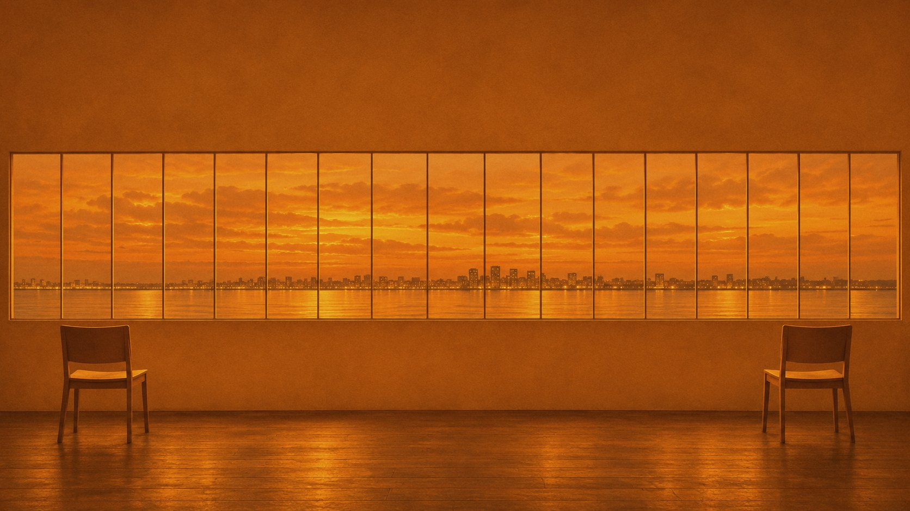
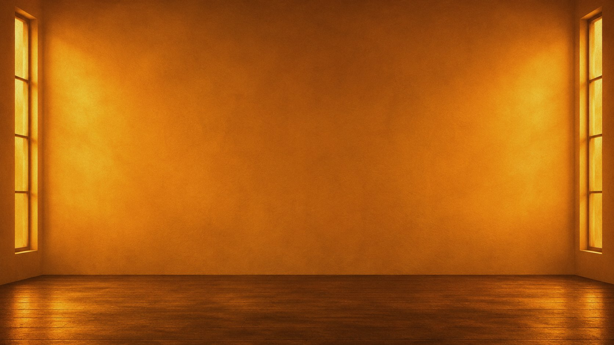
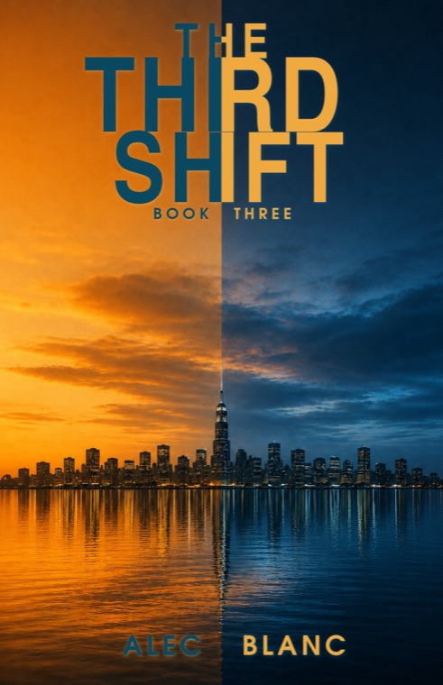
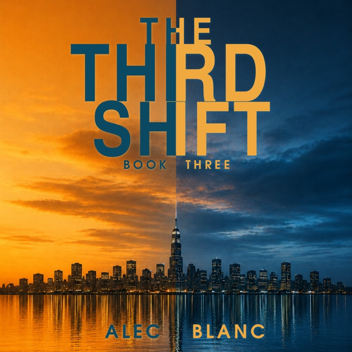
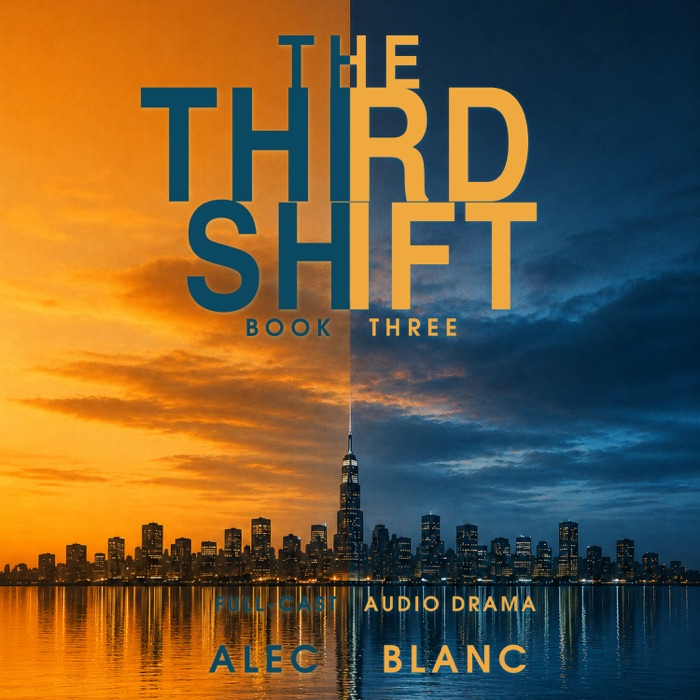
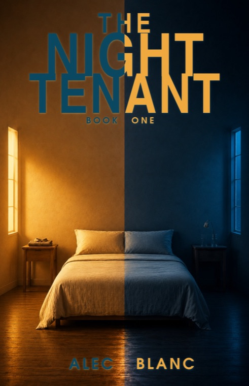
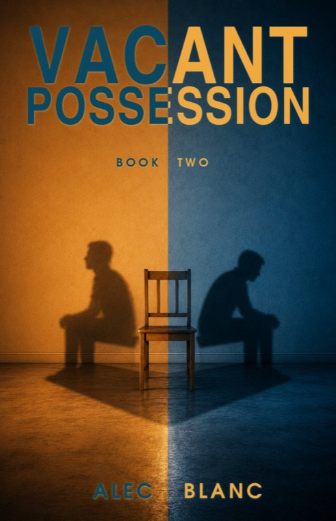

The Night Tenant · Book three of three
The Third Shift
The turnover is bleeding. Somebody is surfacing who holds no lease at all.

The turnover has started to bleed. Each tenant surfaces in the other's shift, in fragments, and the body Teo Marsh and Vera Lin share has grown two competing sets of reflexes: the doctors' charts read like a custody dispute. And in the gaps between one tenant and the other, somebody is surfacing who holds no lease at all.
you felt it too.- Tenancy
- III of III
- Held
- No lease on file
- Hours
- Hours not registered
- Issued
- Not yet. No date set.
Read it,or listen to it.

E-bookOn a screenComing- PaperbackIn the handComing
- HardcoverOn the shelfComing

AudiobookUnabridged narrationComing
Audio dramaFull-cast dramatisationComing
The three books, in order

Book One

Book Two
This book
The Third Shift